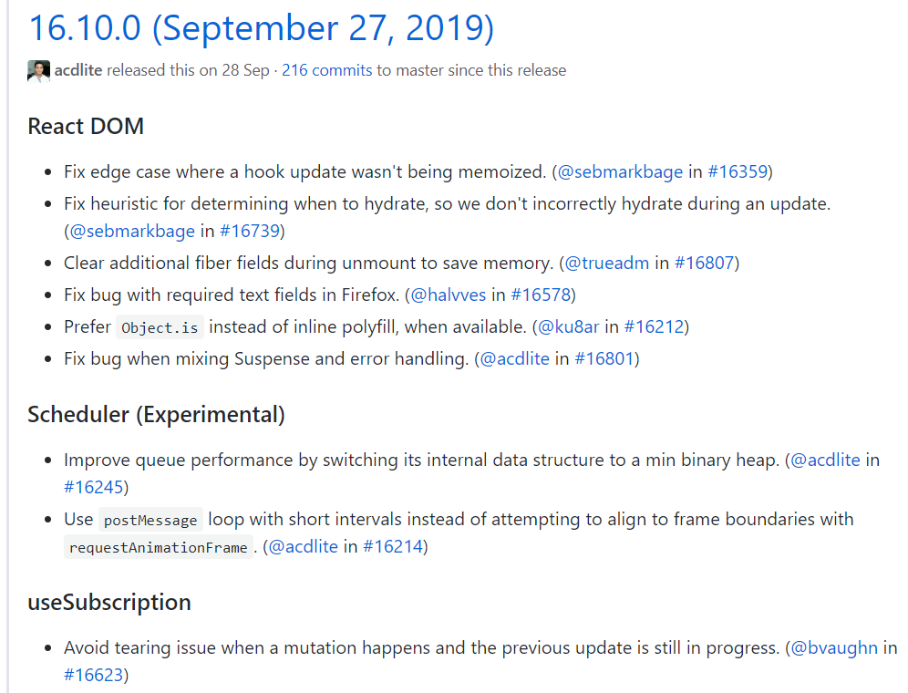

原文连接:https://www.cnblogs.com/tangshiwei/p/12100306.html
引言
如今，主流的前端框架React，Vue和Angular在前端领域已成三足鼎立之势，基于前端技术栈的发展现状，大大小小的公司或多或少也会使用其中某一项或者多项技术栈，那么掌握并熟练使用其中至少一种也成为了前端人员必不可少的技能饭碗。当然，框架的部分实现细节也常成为面试中的考察要点，因此，一方面为了应付面试官的连番追问，另一方面为了提升自己的技能水平，还是有必要对框架的底层实现原理有一定的涉猎。
当然对于主攻哪门技术栈没有严格的要求，挑选你自己喜欢的就好，在面试中面试官一般会先问你最熟悉的是哪门技术栈，对于你不熟悉的领域，面试官可能也不会做太多的追问。笔者在项目中一直是使用的Vue框架，其上手门槛低，也提供了比较全面和友好的官方文档可供参考。但是可能因人而异，感觉自己还是比较喜欢React，也说不出什么好坏，可能是自己最早接触的前端框架吧，不过很遗憾，在之前的工作中一直派不上用场，但即便如此，也阻挡不了自己对底层原理的好奇心。所以最近也是开始研究React的源码，并对源码的解读过程做一下记录，方便加深记忆。如果你的技术栈刚好是React，并且也对源码感兴趣，那么我们可以一起互相探讨技术难点，让整个阅读源码的过程变得更加容易和有趣。源码中如果有理解错误的地方，还希望能够指出。
1、准备阶段
在facebook的github上，目前React的最新版本为v16.12.0，我们知道在React的v16版本之后引入了新的Fiber架构，这种架构使得任务拥有了暂停和恢复机制，将一个大的更新任务拆分为一个一个执行单元，充分利用浏览器在每一帧的空闲时间执行任务，无空闲时间则延迟执行，从而避免了任务的长时间运行导致阻塞主线程同步任务的执行。为了了解这种Fiber架构，这里选择了一个比较适中的v16.10.2的版本，没有选择最新的版本是因为在最新版本中移除了一些旧的兼容处理方案，虽说这些方案只是为了兼容，但是其思想还是比较先进的，值得我们推敲学习，所以先将其保留下来，这里选择v16.10.2版本的另外一个原因是React在v16.10.0的版本中涉及到两个比较重要的优化点：

在上图中指出，在任务调度(Scheduler)阶段有两个性能的优化点，解释如下：
- 将任务队列的内部数据结构转换成最小二叉堆的形式以提升队列的性能(在最小堆中我们能够以最快的速度找到最小的那个值，因为那个值一定在堆的顶部，有效减少整个数据结构的查找时间)。
- 使用周期更短的
postMessage循环的方式而不是使用requestAnimationFrame这种与帧边界对齐的方式(这种优化方案指得是在将任务进行延迟后恢复执行的阶段，前后两种方案都是宏任务，但是宏任务也有顺序之分，postMessage的优先级比requestAnimationFrame高，这也就意味着延迟任务能够更快速地恢复并执行)。
当然现在不太理解的话没关系，后续会有单独的文章来介绍任务调度这一块内容，遇到上述两个优化点的时候会进行详细说明，在开始阅读源码之前，我们可以使用create-react-app来快速搭建一个React项目，后续的示例代码可以在此项目上进行编写：
// 项目搭建完成后React默认为最新版v16.12.0
create-react-app react-learning
// 为了保证版本一致，手动将其修改为v16.10.2
npm install --save react@16.10.2 react-dom@16.10.2
// 运行项目
npm start执行以上步骤后，不出意外的话，浏览器中会正常显示出项目的默认界面。得益于在Reactv16.8版本之后推出的React Hooks功能，让我们在原来的无状态函数组件中也能进行状态管理，以及使用相应的生命周期钩子，甚至在新版的create-react-app脚手架中，根组件App已经由原来的类组件的写法升级为了推荐的函数定义组件的方式，但是原来的类组件的写法并没有被废弃掉，事实上我们项目中还是会大量充斥着类组件的写法，因此为了了解这种类组件的实现原理，我们暂且将App根组件的函数定义的写法回退到类组件的形式，并对其内容进行简单修改：
// src -> App.js
import React, {Component} from 'react';
function List({data}) {
return (
<ul className="data-list">
{
data.map(item => {
return <li className="data-item" key={item}>{item}</li>
})
}
</ul>
);
}
export default class App extends Component {
constructor(props) {
super(props);
this.state = {
data: [1, 2, 3]
};
}
render() {
return (
<div className="container">
<h1 className="title">React learning</h1>
<List data={this.state.data} />
</div>
);
}
}
经过以上简单修改后，然后我们通过调用
// src -> index.js
ReactDOM.render(<App />, document.getElementById('root'));来将组件挂载到DOM容器中，最终得到App组件的DOM结构如下所示：
<div class="container">
<h1 class="title">React learning</h1>
<ul class="data-list">
<li class="data-item">1</li>
<li class="data-item">2</li>
<li class="data-item">3</li>
</ul>
</div>因此我们分析React源码的入口也将会是从ReactDOM.render方法开始一步一步分析组件渲染的整个流程，但是在此之前，我们有必要先了解几个重要的前置知识点，这几个知识点将会更好地帮助我们理解源码的函数调用栈中的参数意义和其他的一些细节。
2、前置知识
首先我们需要明确的是，在上述示例中，App组件的render方法返回的是一段HTML结构，在普通的函数中这种写法是不支持的，所以我们一般需要相应的插件来在背后支撑，在React中为了支持这种jsx语法提供了一个Babel预置工具包@babel/preset-react，其中这个preset又包含了两个比较核心的插件：
@babel/plugin-syntax-jsx：这个插件的作用就是为了让Babel编译器能够正确解析出jsx语法。@babel/plugin-transform-react-jsx：在解析完jsx语法后，因为其本质上是一段HTML结构，因此为了让JS引擎能够正确识别，我们就需要通过该插件将jsx语法编译转换为另外一种形式。在默认情况下，会使用React.createElement来进行转换，当然我们也可以在.babelrc文件中来进行手动设置。
// .babelrc
{
"plugins": [
["@babel/plugin-transform-react-jsx", {
"pragma": "Preact.h", // default pragma is React.createElement
"pragmaFrag": "Preact.Fragment", // default is React.Fragment
"throwIfNamespace": false // defaults to true
}]
]
}这里为了方便起见，我们可以直接使用Babel官方实验室来查看转换后的结果，对应上述示例，转换后的结果如下所示：
// 转换前
render() {
return (
<div className="container">
<h1 className="title">React learning</h1>
<List data={this.state.data} />
</div>
);
}
// 转换后
render() {
return React.createElement("div", {
className: "content"
},
React.createElement("header", null, "React learning"),
React.createElement(List, { data: this.state.data }));
}可以看到jsx语法最终被转换成由React.createElement方法组成的嵌套调用链，可能你之前已经了解过这个API，或者接触过一些伪代码实现，这里我们就基于源码，深入源码内部来看看其背后为我们做了哪些事情。
2.1 createElement & ReactElement
为了保证源码的一致性，也建议你将React版本和笔者保持一致，采用v16.10.2版本，可以通过facebook的github官方渠道进行获取，下载下来之后我们通过如下路径来打开我们需要查看的文件：
// react-16.10.2 -> packages -> react -> src -> React.js 在React.js文件中，我们直接跳转到第63行，可以看到React变量作为一个对象字面量，包含了很多我们所熟知的方法，包括在v16.8版本之后推出的React Hooks方法：
const React = {
Children: {
map,
forEach,
count,
toArray,
only,
},
createRef,
Component,
PureComponent,
createContext,
forwardRef,
lazy,
memo,
// 一些有用的React Hooks方法
useCallback,
useContext,
useEffect,
useImperativeHandle,
useDebugValue,
useLayoutEffect,
useMemo,
useReducer,
useRef,
useState,
Fragment: REACT_FRAGMENT_TYPE,
Profiler: REACT_PROFILER_TYPE,
StrictMode: REACT_STRICT_MODE_TYPE,
Suspense: REACT_SUSPENSE_TYPE,
unstable_SuspenseList: REACT_SUSPENSE_LIST_TYPE,
// 重点先关注这里，生产模式下使用后者
createElement: __DEV__ ? createElementWithValidation : createElement,
cloneElement: __DEV__ ? cloneElementWithValidation : cloneElement,
createFactory: __DEV__ ? createFactoryWithValidation : createFactory,
isValidElement: isValidElement,
version: ReactVersion,
unstable_withSuspenseConfig: withSuspenseConfig,
__SECRET_INTERNALS_DO_NOT_USE_OR_YOU_WILL_BE_FIRED: ReactSharedInternals,这里我们暂且先关注createElement方法，在生产模式下它来自于与React.js同级别的ReactElement.js文件，我们打开该文件，并直接跳转到第312行，可以看到createElement方法的函数定义(去除了一些__DEV__环境才会执行的代码)：
/**
* 该方法接收包括但不限于三个参数，与上述示例中的jsx语法经过转换之后的实参进行对应
* @param type 表示当前节点的类型，可以是原生的DOM标签字符串，也可以是函数定义组件或者其它类型
* @param config 表示当前节点的属性配置信息
* @param children 表示当前节点的子节点，可以不传，也可以传入原始的字符串文本，甚至可以传入多个子节点
* @returns 返回的是一个ReactElement对象
*/
export function createElement(type, config, children) {
let propName;
// Reserved names are extracted
// 用于存放config中的属性，但是过滤了一些内部受保护的属性名
const props = {};
// 将config中的key和ref属性使用变量进行单独保存
let key = null;
let ref = null;
let self = null;
let source = null;
// config为null表示节点没有设置任何相关属性
if (config != null) {
// 有效性判断，判断 config.ref !== undefined
if (hasValidRef(config)) {
ref = config.ref;
}
// 有效性判断，判断 config.key !== undefined
if (hasValidKey(config)) {
key = '' + config.key;
}
self = config.__self === undefined ? null : config.__self;
source = config.__source === undefined ? null : config.__source;
// Remaining properties are added to a new props object
// 用于将config中的所有属性在过滤掉内部受保护的属性名后，将剩余的属性全部拷贝到props对象中存储
// const RESERVED_PROPS = {
// key: true,
// ref: true,
// __self: true,
// __source: true,
// };
for (propName in config) {
if (
hasOwnProperty.call(config, propName) &&
!RESERVED_PROPS.hasOwnProperty(propName)
) {
props[propName] = config[propName];
}
}
}
// Children can be more than one argument, and those are transferred onto
// the newly allocated props object.
// 由于子节点的数量不限，因此从第三个参数开始，判断剩余参数的长度
// 具有多个子节点则props.children属性存储为一个数组
const childrenLength = arguments.length - 2;
if (childrenLength === 1) {
// 单节点的情况下props.children属性直接存储对应的节点
props.children = children;
} else if (childrenLength > 1) {
// 多节点的情况下则根据子节点数量创建一个数组
const childArray = Array(childrenLength);
for (let i = 0; i < childrenLength; i++) {
childArray[i] = arguments[i + 2];
}
props.children = childArray;
}
// Resolve default props
// 此处用于解析静态属性defaultProps
// 针对于类组件或函数定义组件的情况，可以单独设置静态属性defaultProps
// 如果有设置defaultProps，则遍历每个属性并将其赋值到props对象中(前提是该属性在props对象中对应的值为undefined)
if (type && type.defaultProps) {
const defaultProps = type.defaultProps;
for (propName in defaultProps) {
if (props[propName] === undefined) {
props[propName] = defaultProps[propName];
}
}
}
// 最终返回一个ReactElement对象
return ReactElement(
type,
key,
ref,
self,
source,
ReactCurrentOwner.current,
props,
);
}经过上述分析我们可以得出，在类组件的render方法中最终返回的是由多个ReactElement对象组成的多层嵌套结构，所有的子节点信息均存放在父节点的props.children属性中。我们将源码定位到ReactElement.js的第111行，可以看到ReactElement函数的完整实现：
/**
* 为一个工厂函数，每次执行都会创建并返回一个ReactElement对象
* @param type 表示节点所对应的类型，与React.createElement方法的第一个参数保持一致
* @param key 表示节点所对应的唯一标识，一般在列表渲染中我们需要为每个节点设置key属性
* @param ref 表示对节点的引用，可以通过React.createRef()或者useRef()来创建引用
* @param self 该属性只有在开发环境才存在
* @param source 该属性只有在开发环境才存在
* @param owner 一个内部属性，指向ReactCurrentOwner.current，表示一个Fiber节点
* @param props 表示该节点的属性信息，在React.createElement中通过config，children参数和defaultProps静态属性得到
* @returns 返回一个ReactElement对象
*/
const ReactElement = function(type, key, ref, self, source, owner, props) {
const element = {
// This tag allows us to uniquely identify this as a React Element
// 这里仅仅加了一个$$typeof属性，用于标识这是一个React Element
$$typeof: REACT_ELEMENT_TYPE,
// Built-in properties that belong on the element
type: type,
key: key,
ref: ref,
props: props,
// Record the component responsible for creating this element.
_owner: owner,
};
...
return element;
};一个ReactElement对象的结构相对而言还是比较简单，主要是增加了一个$$typeof属性用于标识该对象是一个React Element类型。REACT_ELEMENT_TYPE在支持Symbol类型的环境中为symbol类型，否则为number类型的数值。与REACT_ELEMENT_TYPE对应的还有很多其他的类型，均存放在shared/ReactSymbols目录中，这里我们可以暂且只关心这一种，后面遇到其他类型再来细看。
2.2 Component & PureComponent
了解完ReactElement对象的结构之后，我们再回到之前的示例，通过继承React.Component我们将App组件修改为了一个类组件，我们不妨先来研究下React.Component的底层实现。React.Component的源码存放在packages/react/src/ReactBaseClasses.js文件中，我们将源码定位到第21行，可以看到Component构造函数的完整实现：
/**
* 构造函数，用于创建一个类组件的实例
* @param props 表示所拥有的属性信息
* @param context 表示所处的上下文信息
* @param updater 表示一个updater对象，这个对象非常重要，用于处理后续的更新调度任务
*/
function Component(props, context, updater) {
this.props = props;
this.context = context;
// If a component has string refs, we will assign a different object later.
// 该属性用于存储类组件实例的引用信息
// 在React中我们可以有多种方式来创建引用
// 通过字符串的方式，如：<input type="text" ref="inputRef" />
// 通过回调函数的方式，如：<input type="text" ref={(input) => this.inputRef = input;} />
// 通过React.createRef()的方式，如：this.inputRef = React.createRef(null); <input type="text" ref={this.inputRef} />
// 通过useRef()的方式，如：this.inputRef = useRef(null); <input type="text" ref={this.inputRef} />
this.refs = emptyObject;
// We initialize the default updater but the real one gets injected by the
// renderer.
// 当state发生变化的时候，需要updater对象去处理后续的更新调度任务
// 这部分涉及到任务调度的内容，在后续分析到任务调度阶段的时候再来细看
this.updater = updater || ReactNoopUpdateQueue;
}
// 在原型上新增了一个isReactComponent属性用于标识该实例是一个类组件的实例
// 这个地方曾经有面试官考过，问如何区分函数定义组件和类组件
// 函数定义组件是没有这个属性的，所以可以通过判断原型上是否拥有这个属性来进行区分
Component.prototype.isReactComponent = {};
/**
* 用于更新状态
* @param partialState 表示下次需要更新的状态
* @param callback 在组件更新之后需要执行的回调
*/
Component.prototype.setState = function(partialState, callback) {
...
this.updater.enqueueSetState(this, partialState, callback, 'setState');
};
/**
* 用于强制重新渲染
* @param callback 在组件重新渲染之后需要执行的回调
*/
Component.prototype.forceUpdate = function(callback) {
this.updater.enqueueForceUpdate(this, callback, 'forceUpdate');
};上述内容中涉及到任务调度的会在后续讲解到调度阶段的时候再来细讲，现在我们知道可以通过原型上的isReactComponent属性来区分函数定义组件和类组件。事实上，在源码中就是通过这个属性来区分Class Component和Function Component的，可以找到以下方法：
// 返回true则表示类组件，否则表示函数定义组件
function shouldConstruct(Component) {
return !!(Component.prototype && Component.prototype.isReactComponent);
}与Component构造函数对应的，还有一个PureComponent构造函数，这个我们应该还是比较熟悉的，通过浅比较判断组件前后传递的属性是否发生修改来决定是否需要重新渲染组件，在一定程度上避免组件重渲染导致的性能问题。同样的，在ReactBaseClasses.js文件中，我们来看看PureComponent的底层实现：
// 通过借用构造函数，实现典型的寄生组合式继承，避免原型污染
function ComponentDummy() {}
ComponentDummy.prototype = Component.prototype;
function PureComponent(props, context, updater) {
this.props = props;
this.context = context;
// If a component has string refs, we will assign a different object later.
this.refs = emptyObject;
this.updater = updater || ReactNoopUpdateQueue;
}
// 将PureComponent的原型指向借用构造函数的实例
const pureComponentPrototype = (PureComponent.prototype = new ComponentDummy());
// 重新设置构造函数的指向
pureComponentPrototype.constructor = PureComponent;
// Avoid an extra prototype jump for these methods.
// 将Component.prototype和PureComponent.prototype进行合并，减少原型链查找所浪费的时间(原型链越长所耗费的时间越久)
Object.assign(pureComponentPrototype, Component.prototype);
// 这里是与Component的区别之处，PureComponent的原型上拥有一个isPureReactComponent属性
pureComponentPrototype.isPureReactComponent = true;通过以上分析，我们就可以初步得出Component和PureComponent之间的差异，可以通过判断原型上是否拥有isPureReactComponent属性来进行区分，当然更细粒度的区分，还需要在阅读后续的源码内容之后才能见分晓。
3、面试考点
看完以上内容，按道理来说以下几个可能的面试考点应该就不成问题了，或者说至少也不会遇到一个字也回答不了的尴尬局面，试试看吧：
- 在React中为何能够支持
jsx语法 - 类组件的
render方法执行后最终返回的结果是什么 - 手写代码实现一个
createElement方法 - 如何判断一个对象是不是
React Element - 如何区分类组件和函数定义组件
Component和PureComponent之间的关系- 如何区分
Component和PureComponent
4、总结
本文作为React16源码解读的开篇，先讲解了几个比较基础的前置知识点，这些知识点有助于我们在后续分析组件的任务调度和渲染过程时能够更好地去理解源码。阅读源码的过程是痛苦的，一个原因是源码量巨大，文件依赖关系复杂容易让人产生恐惧退缩心理，另一个是阅读源码是个漫长的过程，期间可能会占用你学习其他新技术的时间，让你无法完全静下心来。但是其实我们要明白的是，学习源码不只是为了应付面试，源码中其实有很多我们可以借鉴的设计模式或者使用技巧，如果我们可以学习并应用到我们正在做的项目中，也不失为一件有意义的事情。后续文章就从ReactDOM.render方法开始，一步一步分析组件渲染的整个流程，我们也不需要去搞懂每一行代码，毕竟每个人的思路不太一样，但是关键步骤我们还是需要去多花时间理解的。
5、交流
如果你觉得这篇文章的内容对你有帮助，能否帮个忙关注一下笔者的公众号[前端之境]，每周都会努力原创一些前端技术干货，关注公众号后可以邀你加入前端技术交流群，我们可以一起互相交流，共同进步。
文章已同步更新至Github博客，若觉文章尚可，欢迎前往star！
你的一个点赞，值得让我付出更多的努力！
逆境中成长，只有不断地学习，才能成为更好的自己，与君共勉！